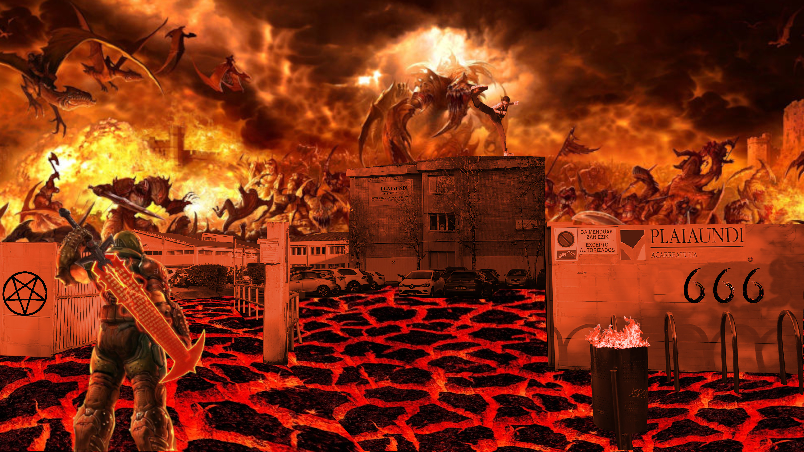

El 20 de abril de 1889 abrió sus puertas el INSTITUTO PLAIAUNDI AKARREATUTA, con la denominación de:
"ESCUELA OFICIAL DE FORMACIÓN DE ACARREOS ADMINISTRATIVA Y DE COMERCIO EXTERIOR"
Su denominación actual es INSTITUTO DE DESEDUCACIÓN SECUNDARIA PLAIAUNDI - IES PLAIAUNDI BHI. Estos son algunos
datos
desde su inicio:
Edificios del centro
El Instituto abrió sus puertas en el conservatorio
Ubicación actual junto al Parque Ecológico
